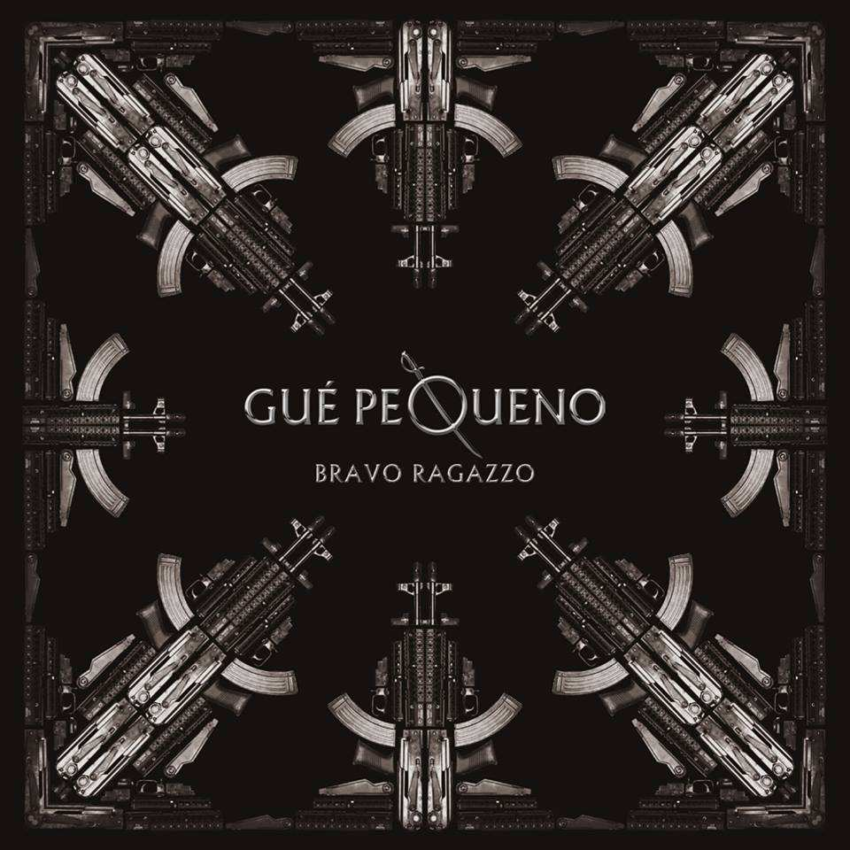

Guè Pequeno
Cosimo Fini, meglio conosciuto con gli pseudonimi di Gué Pequeno, Il Guercio o Lucky Luciano (Milano, 25 dicembre 1980), è un rapper e produttore discografico italiano, membro del gruppo hip hop Club Dogo e della crew Dogo Gang. Nel 2011 ha fondato la propria etichetta indipendente, la Tanta Roba, insieme a DJ Harsh.
Storia
Nato a Milano il giorno di Natale del 1980, fin dalla nascita Gué è affetto da una ptosi all'occhio sinistro. Il padre Marco è uno scrittore e giornalista. La carriera di Gué inizia a Milano intorno al 1997, dove conosce Jake La Furia. L'amicizia tra i due porta alla formazione dei Sacre Scuole composto dai due e da Dargen D'Amico (quest'ultimo in precedenza compagno di classe di Gué). Il beatmaker Don Joe diviene intanto loro stretto collaboratore.
Il trio pubblicherà soltanto il disco 3 MC's al cubo, dopodiché si scioglieranno a causa di contrasti tra Dargen D'Amico e Jake La Furia. I rimanenti componenti, insieme a Don Joe, formeranno successivamente i Club Dogo.
Durante questo periodo, Gué ha partecipato alla realizzazione di diversi album e mixtape, tra cui spiccano 50 Emcee's pt 1 degli ATPC e Tutti X Uno di DJ Enzo.
Il ragazzo d'oro
Il ragazzo d'oro è il primo album in studio del rapper italiano Gué Pequeno, pubblicato il 14 giugno 2011 dalla Universal Records.
L'album debuttò alla quinta posizione della classifica italiana e presenta collaborazioni con artisti del panorama hip hop italiano, tra cui anche i membri della crew Dogo Gang, a cui appartiene.
Il mio primo disco da venduto
Bravo ragazzo è il secondo album in studio del rapper italiano Gué Pequeno, pubblicato il 4 giugno 2013 dalla Universal Music Group.
L'album ha esordito alla seconda posizione della classifica italiana degli album ed è stato certificato disco di platino dalla FIMI per le oltre 50.000 copie vendute.

Per altre info
Torna all'indice